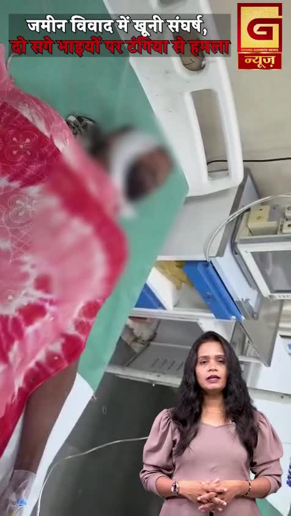
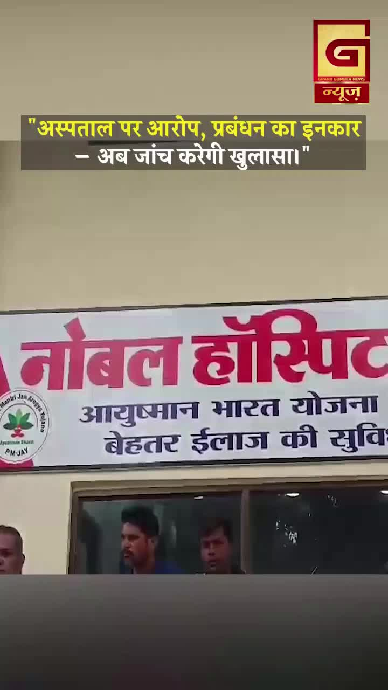
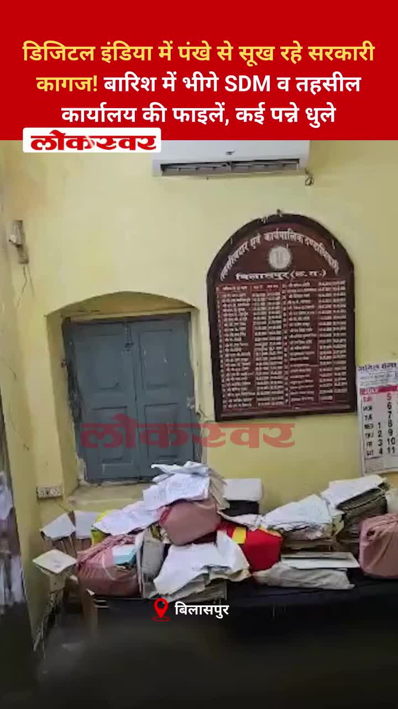
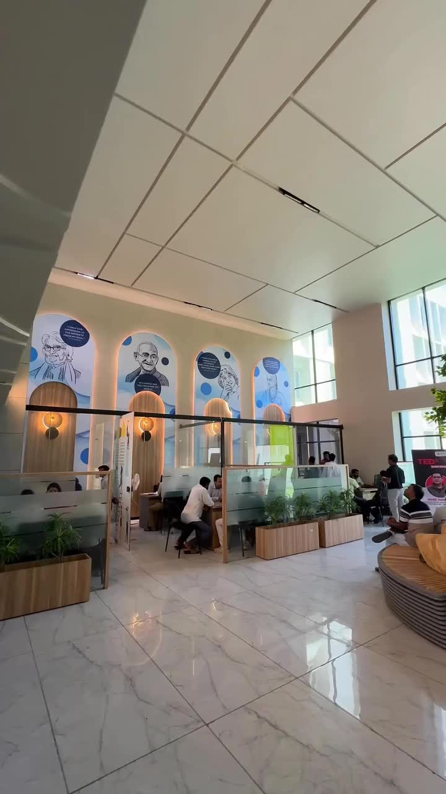
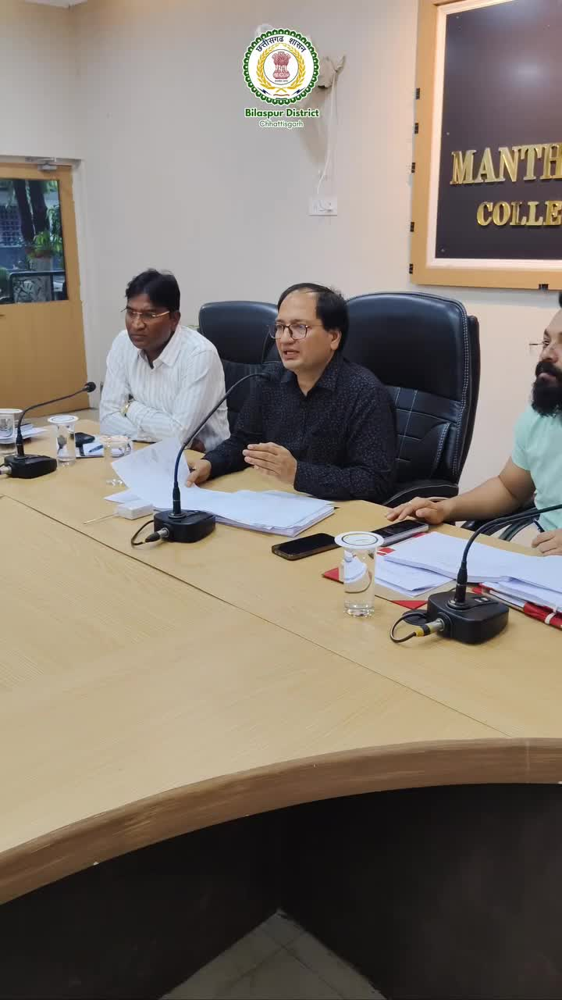
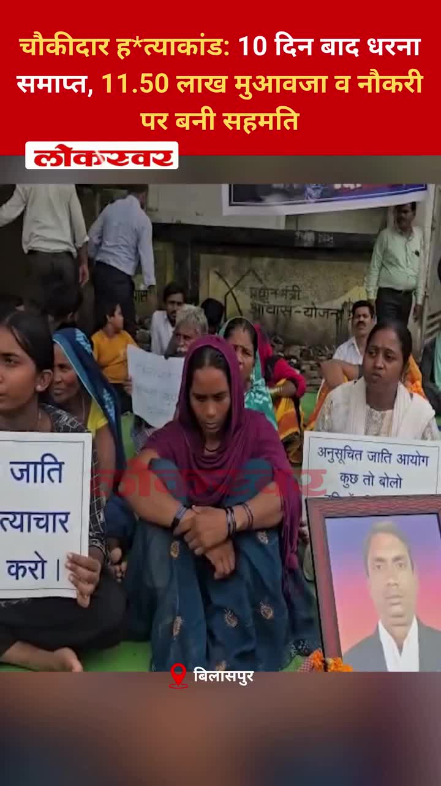

Bilaspur News Hub
6
EDUCATION
4
EVENT
7
GOVERNMENT
6
HEALTH
3
INFRASTRUCTURE
23
INSTAGRAM NEWS
28
NEWS
5
OTHER
11
POLICE
1
RAILWAY
3
SOCIAL
12
YOUTUBE VIDEOS
EDUCATION6

CG Wall · Published: Thu, 23 Ju | Scraped: 2026-07-23 15:55:22
Joint Director A.K. Bhardwaj conducted surprise school inspections and issued notices to absent teachers, warning salary deductions. The move aims to boost attendance and accountability in Bilaspur’s schools.

Lokswar · Published: Thu, 23 Ju | Scraped: 2026-07-23 15:55:22
पश्चिम बंगाल के पुरुलिया में आयोजित CBSE ताइक्वांडो चैंपियनशिप में बिलासपुर के डिफेंस ताइक्वांडो क्लब ने उत्कृष्ट प्रदर्शन करते हुए चार पदक जीते। शिवांगी सिंह को उनके शानदार प्रदर्शन के लिए सर्वश्रेष्ठ खिलाड़ी का खिताब दिया गया।

The Hitavada · Scraped: 2026-07-23 13:29:12
The school hosted an investiture ceremony and distributed prizes to students, recognizing academic and extracurricular achievements.

The Hitavada · Scraped: 2026-07-23 13:29:12
The alleged NEET exam paper leak sparked debate in the legislative Assembly, with demands for a thorough investigation and action.
The Hitavada · Scraped: 2026-07-23 11:51:54
A student's perseverance was recognised with an award for academic excellence. The honour highlights dedication and hard work in studies.
Guru Ghasidas Vishwavidyalaya · Published: 2026-07-23 | Scraped: 2026-07-23 11:51:54
EVENT4

Nai Dunia Bilaspur · Published: Fri, 24 Ju | Scraped: 2026-07-24 05:05:05
The Shri Ram Shraddha Yatra will be organized in Bilaspur from July 25 to 27 to honor Bhanja Shri Ram. Devotees will dispatch coconuts to Ayodhya as part of the pilgrimage. The event seeks to promote cultural unity.

The Hitavada · Scraped: 2026-07-24 11:36:51
The Wankhede team will captain Maharashtra in the upcoming junior hockey nationals, marking a significant opportunity for the city. This event highlights the growing hockey talent in the region and aims to boost youth participation.
The Hitavada · Scraped: 2026-07-24 11:36:51
Janvi scored two crucial goals, leading Pragatiks to victory in the title contest. Her performance showcased her skill and determination, securing the team's success.

The Hitavada · Scraped: 2026-07-24 08:10:21
The city will host the Akhil Bharatiya Swasthya Aayam Prashikshan Varg starting 25th, bringing together health professionals. The event aims to share best practices and promote community health initiatives.
GOVERNMENT7

Nai Dunia Bilaspur · Published: Thu, 23 Ju | Scraped: 2026-07-23 11:51:54
The expansion of the Patwari Association building in Mangla is stalled due to land allocation issues. Officials are now considering a 0.040‑hectare plot to resolve the deadlock.

Lokswar · Published: Thu, 23 Ju | Scraped: 2026-07-23 11:51:54
Jal Sansadhan Vibhag warned that Mini Mata Banga dam near Machadolli will release water if levels keep rising during monsoon. The move aims to prevent flooding and protect downstream communities.
Lokswar · Published: Thu, 23 Ju | Scraped: 2026-07-23 11:51:54
Meteorological authorities issued a red alert warning of intense rainfall, thunder and lightning across Chhattisgarh for the next two days. Residents are urged to stay indoors and carry umbrellas if they must go out.

The Hitavada · Scraped: 2026-07-24 08:10:21
The district collector has terminated the lease agreement with VHA, citing violations. The decision follows a routine inspection and aims to ensure proper land use.

The Hitavada · Scraped: 2026-07-23 13:29:12
Senior IAS officer Ashok Barnwal will take over as the state's Chief Secretary, succeeding the previous incumbent.
The Hitavada · Scraped: 2026-07-23 11:51:54
The state cabinet has formed a committee to oversee fertiliser supply distribution. The move aims to ensure timely availability and curb irregularities in the sector.

G News Bilaspur · Published: 2026-07-23 | Scraped: 2026-07-23 15:55:22
Congress party staged a protest in Tifra against alleged exam irregularities and the subsequent action taken against students. The demonstration highlights concerns over fairness in the examination process.
HEALTH6

CG Wall · Published: Thu, 23 Ju | Scraped: 2026-07-23 15:55:22
A patient with a 24‑year‑old locked jaw received successful surgery at Bilaspur’s SIMS hospital, restoring hope in public healthcare. The operation showcases the hospital’s improved capabilities.

Nai Dunia Bilaspur · Published: Fri, 24 Ju | Scraped: 2026-07-24 08:10:21
कोटा के वनग्राम औरापानी में मलेरिया का प्रकोप फैल गया है, जिससे एक ही परिवार के तीन सदस्य संक्रमित हो गए हैं। स्वास्थ्य विभाग ने नियंत्रण उपाय शुरू कर दिए हैं।

Nai Dunia Bilaspur · Published: Fri, 24 Ju | Scraped: 2026-07-24 11:36:51
The new blood center at Bilaspur SIMS Super Specialty Hospital will enhance blood availability and patient care. It marks a significant advancement in Chhattisgarh's public health infrastructure.

The Hitavada · Scraped: 2026-07-24 08:10:21
Despite being unsafe, the mental hospital continues to treat patients as redevelopment remains stalled. Concerns grow over patient safety and the need for immediate structural repairs.

The Hitavada · Scraped: 2026-07-24 08:10:21
NSCBMC surgeons have introduced an ultra‑affordable technique for breast cancer surgery, making treatment accessible to low‑income patients. The method reduces costs while maintaining high success rates.

The Hitavada · Scraped: 2026-07-23 13:29:12
The agreement aims to enhance fire safety protocols and disaster response capabilities at AIIMS Bhopal, leveraging AIILSG's expertise.
INFRASTRUCTURE3

Nai Dunia Bilaspur · Published: Fri, 24 Ju | Scraped: 2026-07-24 05:05:05
A critical overbridge on NH‑49 collapsed, trapping several buses and an ambulance and creating massive traffic congestion between Raipur and Raigarh. Emergency crews are working to clear debris and rescue passengers. Authorities have diverted traffic and started repairs.

The Hitavada · Scraped: 2026-07-24 08:10:21
Heavy rains have revealed poor-quality pothole repairs on city roads, posing hazards to commuters. Authorities have been urged to redo the work promptly.

G News Bilaspur · Published: 2026-07-23 | Scraped: 2026-07-23 15:55:22
The Minamata Bango dam is expected to release water, prompting safety alerts for people living along the Hasdeo River. Residents are advised to stay vigilant and follow official instructions to avoid any risk.
INSTAGRAM NEWS23


The Raipur–Bilaspur Expressway will provide a 4/6 lane tolled corridor connecting the two major cities. It aims to cut travel time and boost regional trade. Construction is ongoing with an expected near‑term completion.


The post emphasizes that disagreements are natural but should not harm friendships. It encourages expressing views respectfully without forcing them on others, resonating with many social media users.


The accused befriended a young woman on Instagram, used a malicious APK to hack her phone, and blackmailed her. Authorities in Raigarh have arrested him, highlighting concerns over cyber fraud.


A railway court in Bilaspur sentenced a man to six years imprisonment for stealing an ITBP jawan's pistol, emphasizing strict action against weapon theft.


A massive peepal tree collapsed in Kududand, striking a young woman and causing serious injuries, highlighting the need for regular tree maintenance in public areas.


A video shows two youths being mercilessly beaten with cable wires and belts in a public area, sparking outrage and calls for stricter law enforcement.
बिलासपुर के उसलापुर रोड स्थित नंदन विहार कॉलोनी में तेज बारिश के दौरान एक विशाल नीलगिरी का पेड़ जड़ से उखड़कर सड़क पर गिर गया। हादसे में दो बिजली के खंभे, तार और एक कार क्षतिग्रस्त हो गई...#Bilaspur #UslapurRoad #NandanVihar #HeavyRain #NilgiriTree #PowerOutage #MunicipalCorporation #ElectricityDepartment #ChhattisgarhNews #LocalNews by @g_news_bilaspur

जमीन विवाद को लेकर दो सगे भाइयों पर टंगिया और डंडों से हमला कर दिया गया। दोनों घायल हुए और उपचार के बाद पुलिस में शिकायत दर्ज कराई। पीड़ितों का दावा है कि कोर्ट का फैसला उनके पक्ष में है, जबकि पुलिस ने मामला दर्ज कर जांच शुरू कर दी है।#BreakingNews #LandDispute #CrimeNews #ChhattisgarhNews #ViralNews #GroundReport by @g_news_bilaspur

बिलासपुर के नोबल अस्पताल में मरीज की मौत के बाद हंगामा। परिजनों ने इलाज में लापरवाही का आरोप लगाया, अस्पताल ने आरोपों से इनकार किया। पुलिस-प्रशासन ने मामले की जांच शुरू कर दी है।#Bilaspur #NobleHospital #HospitalNegligence #AjayTamrakar #RoadAccident #MedicalInvestigation #ChhattisgarhNews #BreakingNews #Healthcare #justice by @g_news_bilaspur

डिजिटल इंडिया में पंखे से सूख रहे सरकारी कागज! बारिश में भीगे SDM व तहसील कार्यालय की फाइलें, कई पन्ने धुले #DigitalIndia #BilaspurNews #SDMOffice #TehsilOffice #AdministrativeLapse #ChhattisgarhRain #MonsoonChaos #GovernmentFiles #InfrastructureFailure by @lokswar.in
Heavy rains have disrupted railway services in Bilaspur, causing trains to be delayed by several hours. Passengers are facing inconvenience due to the slowdown. Authorities are working to restore normal operations.
The approach of an overbridge on NH-49 collapsed during heavy rain, blocking traffic for hours. The jam affected commuters and emergency services. Authorities are clearing debris and working to reopen the road.
Following recent rains, Indian Railways plans to upgrade the drainage system in Bilaspur yard to prevent waterlogging. The improvement aims to enhance safety and operational efficiency. Work is expected to start soon.

United University hosted a career fair where top recruiters visited campus, offering students jobs and internships. The event highlighted the university's focus on industry connections and placement. Participants praised the networking opportunities.
Smart meters now provide transparent billing and real-time electricity consumption data, helping users monitor usage. This initiative improves billing accuracy and supports better energy management in the district.

Collector Sanjay Agarwal has accelerated revenue services to deliver timely solutions to the public. The move reduces delays and enhances citizen satisfaction with government processes.

शिक्षा व्यवस्था में भ्रष्टाचार, पेपर लीक और छात्रों पर कार्रवाई के विरोध में कांग्रेस आज बिलासपुर के तिफरा में एक दिवसीय धरना-प्रदर्शन करेगी। पार्टी ने केंद्रीय शिक्षा मंत्री के इस्तीफे और परीक्षा अनियमितताओं पर संसद में चर्चा की मांग उठाई है।#Bilaspur #CongressProtest #EducationSystem #PaperLeak #StudentRights #Chhattisgarh by @g_news_bilaspur

चौकीदार ह*त्याकांड: 10 दिन बाद धरना समाप्त, 11.50 लाख मुआवजा व नौकरी पर बनी सहमति #BilaspurNews #ChowkidarMurderCase #JusticeForChowkidar #CompensationAgreed #BilaspurAdministration by @lokswar.in
स्मार्ट मीटर से मिल रही पारदर्शी बिलिंग, रियल टाइम बिजली खपत की जानकारी और बिजली उपयोग पर बेहतर नियंत्रण जैसी आधुनिक सुविधाएं
#SmartMeter #MorBijliApp #SmartChoice #EnergySaving #Chhattisgarh by @bilaspurdist
NEWS28

Nai Dunia Bilaspur · Published: Thu, 23 Ju | Scraped: 2026-07-23 13:29:12
<img src="https://img.naidunia.com/naidunia/ndnimg/23072026/23_07_2026-cghightcourtbsp.jpg" />छत्तीसगढ़ हाईकोर्ट ने फैसला सुनाया है कि केवल नाबालिग की सोनोग्राफी करने पर डॉक्टर पर पोक्सो एक्ट के तहत कार्रवाई नहीं की जा सकती। अदालत ने राजनांदगांव की रेडियोलॉजिस्ट डॉ. आरती उइके के खिलाफ दर्ज मामले को

CG Wall · Published: Thu, 23 Ju | Scraped: 2026-07-23 13:29:12
बिलासपुर… सिरगिट्टी स्थित गोल्डन स्टे होटल के प्रथम तल पर अवैध रूप से रखे गए बड़ी मात्रा में जहरीले कीटनाशक और जैव उत्प्रेरक खाद के भंडारण का मामला सामने आया है। कृषि विभाग के जिला स्तरीय उड़नदस्ता दल ने छापेमारी कर करीब 14 हजार लीटर कृषि आदान जब्त करने और उनके विक्रय पर तत्काल रोक …

CG Wall · Published: Thu, 23 Ju | Scraped: 2026-07-23 17:15:53
बिलासपुर… सड़क हादसों को केवल चालान और कार्रवाई से नहीं, बल्कि लोगों की आदत बदलकर रोकने की दिशा में बिलासपुर यातायात पुलिस ने नई पहल शुरू की है। अब शहर की प्रमुख सड़कों और आंतरिक मार्गों पर जगह-जगह गति सीमा दर्शाने वाले संकेतक बोर्ड लगाए जा रहे हैं, ताकि वाहन चालक पहले से जान सकें कि …

The Hitavada · Scraped: 2026-07-24 11:36:51

The Hitavada · Scraped: 2026-07-24 11:36:51
The Hitavada · Scraped: 2026-07-24 11:36:51

The Hitavada · Scraped: 2026-07-24 11:36:51
The Hitavada · Scraped: 2026-07-24 11:36:51
The Hitavada · Scraped: 2026-07-24 08:10:21
The Hitavada · Scraped: 2026-07-24 08:10:21
The Hitavada · Scraped: 2026-07-24 08:10:21
The Hitavada · Scraped: 2026-07-24 08:10:21
The Hitavada · Scraped: 2026-07-24 08:10:21

The Hitavada · Scraped: 2026-07-24 08:10:21
The Hitavada · Scraped: 2026-07-24 08:10:21
The Hitavada · Scraped: 2026-07-24 08:10:21
After PM assures fast-track justice‘Govt to set up courts in 4 States to hear NEET paper leak cases’
The Hitavada · Scraped: 2026-07-24 08:10:21
The Hitavada · Scraped: 2026-07-24 08:10:21
The Hitavada · Scraped: 2026-07-24 08:10:21
The Hitavada · Scraped: 2026-07-24 08:10:21
OTHER5
BREAKINGTree falls in Bilaspur, injures young woman / बिलासपुर के कुदुदंड में पीपल का पेड़ गिरा, युवती घायल
Lokswar · Published: Thu, 23 Ju | Scraped: 2026-07-23 15:55:22
कुदुदंड, बिलासपुर में एक बड़ा पीपल का पेड़ गिर गया, जिससे एक युवती गंभीर रूप से घायल हो गई। घटना शुक्रवार को पंप हाउस के पास हुई। अधिकारियों ने बचाव कार्य शुरू कर दिया है और सुरक्षा जाँच के आदेश दिए हैं।
Lokswar · Published: Fri, 24 Ju | Scraped: 2026-07-24 08:10:21
Monsoon remains fully active across Chhattisgarh, with continuous rainfall reported in the past 24 hours. The weather department indicates no immediate relief, as clouds persist over the region.

G News Bilaspur · Published: 2026-07-23 | Scraped: 2026-07-23 15:55:22
No specific details provided for this entry.
Nagar Nigam Bilaspur · Published: 2026-07-23 | Scraped: 2026-07-23 19:11:50
The Bilaspur Municipal Corporation encountered a yii\db\Schema::convertException during a database operation, causing a temporary disruption in online services. The technical team has logged the issue and is working to resolve it.
BREAKINGController Action Error at Nagar Nigam Bilaspur / नगर निगम बिलासपुर में कंट्रोलर एक्शन त्रुटि
Nagar Nigam Bilaspur · Published: 2026-07-23 | Scraped: 2026-07-23 19:11:50
A yii\base\Controller::runAction error occurred in the municipal portal, halting a requested action. Administrators have been notified and the system is being restored.
POLICE11

Nai Dunia Bilaspur · Published: Thu, 23 Ju | Scraped: 2026-07-23 11:51:54
Raiders sealed an Oyo hotel in Bilaspur’s Sirgitti following suspicious activities. The operation underscores efforts to curb illegal operations in the area.

Lokswar · Published: Thu, 23 Ju | Scraped: 2026-07-23 11:51:54
Chakrabhatha police detained an elderly man carrying 40 bottles of illicit liquor on a main road, allegedly for sale. The bust underscores ongoing efforts against illegal alcohol trade.

Lokswar · Published: Thu, 23 Ju | Scraped: 2026-07-23 11:51:54
A car traveling at high speed collided with a tree on Bhilai’s Central Avenue Road early Thursday, killing two young passengers instantly. The tragedy highlights the dangers of reckless driving.

CG Wall · Published: Thu, 23 Ju | Scraped: 2026-07-23 15:55:22
Three men were jailed after they stopped pedestrians, sprayed chili powder into eyes, and beat them when money for alcohol was refused. The case highlights rising street violence and swift police action.

CG Wall · Published: Thu, 23 Ju | Scraped: 2026-07-23 15:55:22
Tannu Khan, a transgender woman, was murdered, and two other transgender persons have been charged. Her mother has appealed to the SSP for swift justice and protection of the community.

Nai Dunia Bilaspur · Published: Fri, 24 Ju | Scraped: 2026-07-24 05:05:05
A retired railway employee in Bilaspur lost ₹77,000 after receiving a malicious APK file on his phone. The incident highlights rising cyber‑fraud tactics targeting vulnerable citizens. Police are investigating the case.

Lokswar · Published: Fri, 24 Ju | Scraped: 2026-07-24 08:10:21
A speeding truck collided with a rice-laden truck on the Bhilai-Raipur highway near Baitalpur, leaving the driver of the speeding truck seriously injured. Police are investigating the cause and traffic was disrupted.
Lokswar · Published: Fri, 24 Ju | Scraped: 2026-07-24 08:10:21
Raigarh police under Operation Aghat seized millions of rupees worth of marijuana and arrested a smuggler from Uttar Pradesh. The bust underscores ongoing efforts to curb regional drug trafficking.
The Hitavada · Scraped: 2026-07-24 08:10:21
Two people were killed in a Bhilai road mishap when a car collided, and police recovered liquor bottles and snacks from the vehicle. The incident highlights drunk driving risks and triggered a police investigation.
The Hitavada · Scraped: 2026-07-23 11:51:54
A protest near Rajiv Bhawan turned violent, leaving 16 police personnel injured. Authorities are investigating the incident and have urged calm among residents.

G News Bilaspur · Published: 2026-07-23 | Scraped: 2026-07-23 15:55:22
Thieves stole gold jewelry valued at approximately nine lakh rupees from a flat in Vidyanagar's Pooja Apartments. Police have launched an investigation to trace the culprits and recover the stolen items.
RAILWAY1

Nai Dunia Bilaspur · Published: Fri, 24 Ju | Scraped: 2026-07-24 05:05:05
Heavy rain caused 7‑9 hour delays for trains in Bilaspur even after recent maintenance, affecting the Pune‑Howrah route. A special train has been arranged to clear the backlog. Passengers are advised to check updated schedules.
SOCIAL3
BREAKINGProtest ends after 10 days, compensation and job agreed in chowkidar murder / चौकीदार हत्याकांड: 10 दिन बाद धरना समाप्त, 11.50 लाख मुआवजा व नौकरी पर बनी सहमति
Lokswar · Published: Thu, 23 Ju | Scraped: 2026-07-23 11:51:54
After ten days of agitation, protesters agreed to end the sit‑in following a settlement that includes ₹11.50 lakh compensation and a job for the victim’s family. The case involved the killing of Bal Sanchar Grih chowkidar Narendra Khande.

Digital media takes on new responsibilities beyond entertainment / डिजिटल मीडिया अब सिर्फ मनोरंजन तक सीमित नहीं रहेगा
CG Wall · Published: Thu, 23 Ju | Scraped: 2026-07-23 15:55:22
Bilaspur’s digital media is expanding beyond viral content to include civic engagement, fact‑checking, and community service. This shift seeks to improve public discourse and information quality.
Activist Sonam Wangchuk ends hunger strike, demands written assurance / कार्यकर्ता सोनम वांगचुक ने अनशन तोड़कर सरकार से लिखित प्रस्ताव की मांग की
Lokswar · Published: Fri, 24 Ju | Scraped: 2026-07-24 08:10:21
Activist Sonam Wangchuk ended his prolonged hunger strike late night and issued a statement demanding written proposals and assurances from the government. His fast highlighted the need for concrete action on local issues.
YOUTUBE VIDEOS12


A video shows youths being attacked with cable wires, kicks and stones in Bilaspur. The brutal assault has gone viral, prompting police to launch an investigation.


The final news bulletin for Bilaspur on 24 July 2026 morning highlights current developments and updates. Residents are encouraged to stay informed about the day's key events.


A fraudulent portal hack scheme is jeopardizing students' academic futures in Bilaspur, causing widespread anger. Authorities are urged to act swiftly to protect students and investigate the culprits.


A court has sentenced the accused in a high-profile arms theft case, delivering justice to the victims. The verdict underscores the police's commitment to curbing illegal weapon trafficking.


GRAND NEWS BILASPUR: FINAL NEWS 23.07.2026 MORNING @News18MPChhattisgarh @IBC24InNews @ZeeNews ...


23 जुलाई 2026 को बिलासपुर के लिए शाम के अंतिम समाचार बुलेटिन में विभिन्न स्थानीय अपडेट शामिल हैं। यह क्षेत्रीय समाचारों और घटनाओं की एक संक्षिप्त समीक्षा प्रदान करता है।


एनएचएआई और स्थानीय प्रशासन की धीमी प्रतिक्रिया से बिलासपुर में यात्रियों को भारी असुविधा का सामना करना पड़ रहा है। सड़क कार्यों और यातायात प्रबंधन में देरी से लंबी प्रतीक्षा और गुस्सा हो रहा है। निवासी त्वरित कार्रवाई की मांग कर रहे हैं।


रतनपुर महामाया मंदिर में आषाढ़ गुप्त नवरात्रि का आयोजन धार्मिक अनुष्ठानों और भक्ति कार्यक्रमों के साथ समापन हुआ। भक्तों ने उत्सव की सफलता के लिए आशीर्वाद मांगा और आने वाले वर्ष के लिए शुभकामनाएं दीं।


A hacking incident on a student portal has sparked widespread anger as it jeopardizes academic records and future opportunities. Authorities are investigating the breach, which may affect numerous candidates' results and admissions.


GRAND NEWS BILASPUR:अवैध गतिविधियों और नियमों के उल्लंघन पर निगम सख्त ...


GRAND NEWS BILASPUR:बिलासपुर में कांग्रेस का बड़ा धरना-प्रदर्शन ...